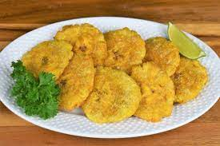

Soak Plantains in warm water for 10 minutes Use a knife to slice along the spine of the plaintain.
Now that the spine is cut peel the plantian and cut the planation into inch long diaganol slices. Crush these pieces flat and start heating you pot of oil.
Once a wooden spoon makes a fizzing noise when placed in the oil throw in a handful of the plantain slices. Remove the slices when the are golden brown.
Place the slices on a paper towel and wait for oil to drip off. Once all slices have been fried throw them back into the pot and fry again.
Remove once the tostones have fried. Dry on a paper towel salt pepper and eat.